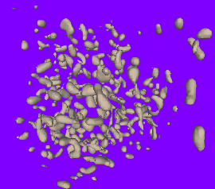

ExtractLevelCubes.h
Level Set Extraction from Gridded 2D and 3D Data
Each voxel has eight corners that are data samples. The image values within the voxel are assumed to be generated by trilinear interpolation. That means the faces are bilinearly interpolated and the edges are linearly interpolated. The extraction was applied using level value 64 in the superoxide dismutase molecule image (molecule.im is in the zipped data file available from this web site). The vertices and triangles are written to a text file. I converted that data into a Wild Magic scene graph (.mgc file) and displayed it with a scene viewer.
|  |
The Marching Cubes Algorithm (MCA) assumes linear interpolation of edges to find intersections of the level surface with the voxel. As long as the level set value is a non-image value, the level surface can only intersect interior edge points. As a result, there are 256 possible intersection configurations with the edges based on whether the differences between the image values at the voxel corners and the level set value are positive (sign +1) or negative (sign -1). The MCA has a precomputed table of 256 different triangle meshes whose lookup value is determined by the signs at the voxel corners. This can lead to topological problems on a face shared by two voxels. The PDF documentation file explains how the topological problem arises and shows how it is avoided. Moreover, the extraction algorithm provided here is topologically correct in the sense that the triangle mesh has the same number of connected components and same topology as the true level surface of the trilinear function. The triangle mesh in a voxel is not obtained as a table lookup. It is constructed by a simple ear-clipping algorithm applied to the wireframe edges constructed on the faces of the voxel. The code here is not the MCA, but the algorithm that should have been used based on the simple, underlying mathematics for identifying level surfaces of a function. Since it is an elementary mathematics issue, Magic Software, Inc. has no intention of obtaining a patent on the algorithm.